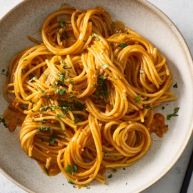

← All recipes
Gochujang Buttered Noodles

Servings: 4 servings · Prep: 5 min · Cook: 20 min
Ingredients
- 1 pound spaghetti or other long pasta
- 6 tablespoons unsalted butter
- 12 garlic cloves, finely chopped (about 1/3 cup)
- Salt and pepper
- 1/4 cup gochujang paste (not sauce; see Tip)
- 1/4 cup honey
- 1/4 cup sherry vinegar or rice vinegar
- Finely chopped cilantro or thinly sliced scallions (optional)
Directions
- Bring a large pot of water to a boil. Add the spaghetti and cook according to package instructions. Reserve 1 cup of the cooking water. Drain the spaghetti and return to its pot.
- While the pasta cooks, melt 4 tablespoons of the butter in a skillet over medium-low. Add the garlic and season generously with salt. Cook, stirring occasionally, until the garlic starts to soften but not brown, 1 to 3 minutes.
- Stir in the gochujang, honey and vinegar, and bring to a simmer over medium-high. Cook, stirring constantly, until the mixture reduces significantly, 3 to 4 minutes; when you drag a spatula across the bottom of the pan, it should leave behind a trail that stays put for about 3 seconds. Remove from the heat.
- Transfer the sauce to the pot with the spaghetti and add the remaining 2 tablespoons butter. Vigorously stir until the butter melts. Add splashes of the pasta cooking water, as needed, to thin out the sauce. Taste and season with salt and pepper. Top with the cilantro or scallions (if using) and serve immediately.
Original source: cooking.nytimes.com